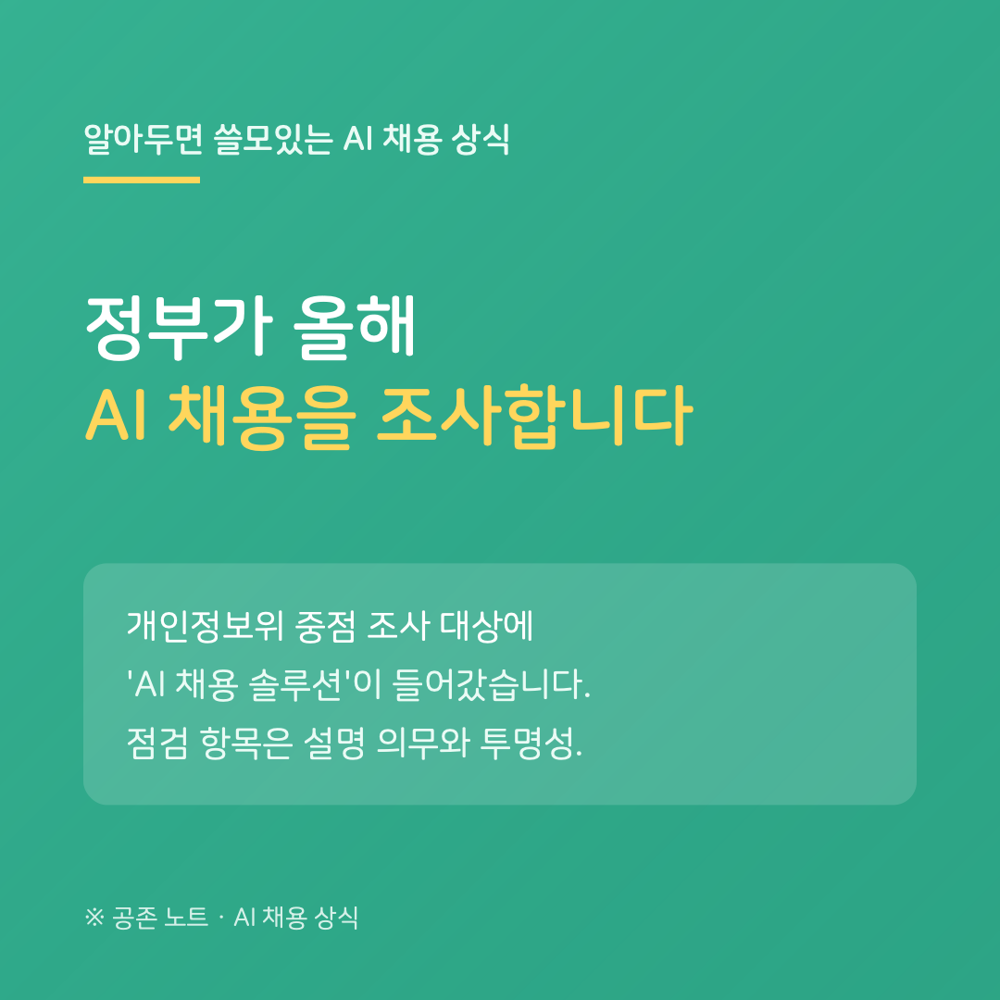

개인정보보호위원회가 올해 초 확정한 2026년 조사 계획에는, 취준생과 직접 관련된 항목이 하나 들어 있습니다. 중점 조사 분야에 'AI 채용 솔루션'이 명시된 것입니다.
내용은 이렇습니다. AI 채용 솔루션과 그것을 쓰는 기업을 대상으로, 그 평가가 '자동화된 결정'에 해당하는지, 설명 의무를 지키고 있는지, 주요 평가 기준을 공개하는지 — 투명성 확보 노력을 점검하겠다는 방침입니다.
낯선 용어 같지만 구직자에게는 익숙한 이야기입니다. '자동화된 결정'에 해당하면 개인정보 보호법에 따라, 평가받은 사람에게 설명을 요구할 권리가 생깁니다. 지금까지는 이 권리를 구직자 개인이 기업에 각자 물어야 했습니다. 올해는 감독기관이 같은 질문을 공식적으로 던지는 셈입니다.
당장 내 전형이 바뀌는 건 아닙니다. 다만 방향은 분명합니다. "AI로 평가했다면 설명할 수 있어야 한다"는 요구가, 개별 구직자의 목소리를 넘어 감독당국의 점검 항목이 됐다는 것입니다. 탈락 후 평가 방식에 대한 설명을 요구하는 일은 유난이 아니라, 정부가 기업에 묻는 것과 같은 질문입니다.
---
※ 개인정보보호위원회 「2026년 개인정보 조사업무 추진 방향」(2026년 1월 발표) 기준이며, 개별 조사 대상과 시기는 공개되지 않았습니다.
공존 노트 · AI가 당신을 평가하는 시대, 구직자를 위한 안내서